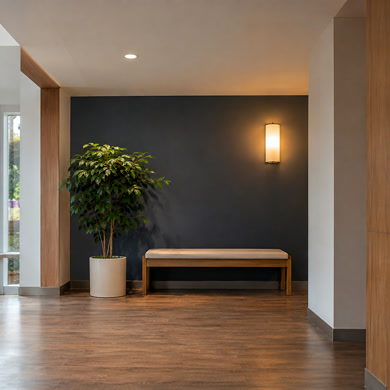
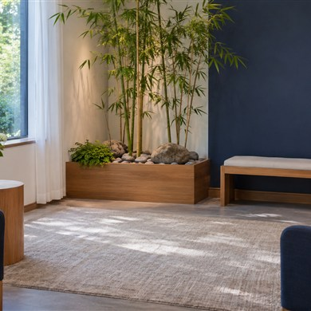
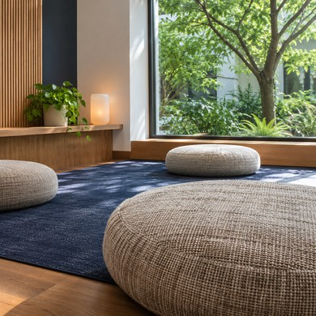

예배와 기도
예배 시간과 병원 예배실 위치를 확인하세요.
병원 교회와 예배 안내
예배와 기도 · 예배 시간과 병원 예배실 위치를 확인하세요.
예배 장소와 시간
예배실 위치예배실은 병원 지하 2층에 있습니다.
주일 예배장년 예배는 일요일 오전 9시에 진행합니다.
새벽 예배월요일부터 목요일까지 오전 7시 30분에 진행합니다.
병원 내 휴게 공간
병원 안에서 잠시 생각을 정리하거나 기도할 수 있도록 차분한 분위기의 공간을 살펴볼 수 있습니다. 예배실의 위치는 병원 지하 2층이며, 병원 교회 안내에 따라 이용해 주세요.







병원 교회 소식
계절 부흥회여름과 겨울에 각각 한 차례 열며 환자와 직원이 함께합니다.
기도 모임병원 구성원과 환자를 위한 기도 모임을 운영합니다.
조찬 기도회병원과 구성원을 위한 아침 기도 모임을 열고 있습니다.
수요 예배수요일 18:00에는 지역 목회자와 함께 예배를 드립니다.
병원 교회 소식에는 계절 부흥회, 기도 모임, 조찬 기도회와 지역 목회자를 초청하는 수요 예배가 소개되어 있습니다. 부흥회는 여름과 겨울에 환자와 직원이 함께하는 일정으로 진행합니다.
의료선교회
의료선교회는 지역 안에서 기독교 단체 간 연합 활동을 이어가고, 병원과 함께 지역 주민을 위한 의료 봉사에 참여합니다. 공개된 안내에는 선교회 소식지와 활동 화보집에 관한 내용도 포함되어 있습니다.
예배 참석과 종교 활동은 각자의 선택입니다. 예배 시간은 위 안내를 확인하고, 병원 이용 중 필요한 사항은 해당 부서에 문의해 주세요.